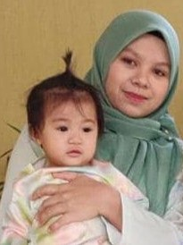
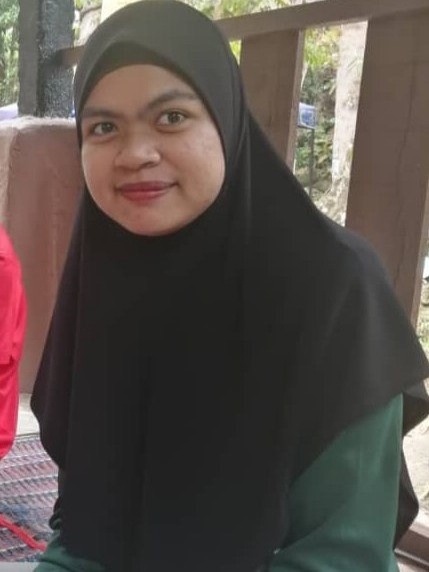
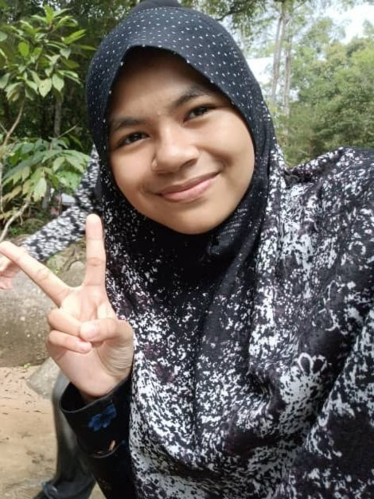

| Mother | |||||||||||||||||||||||||||||||||||||||||||||||||||||||||||||
|---|---|---|---|---|---|---|---|---|---|---|---|---|---|---|---|---|---|---|---|---|---|---|---|---|---|---|---|---|---|---|---|---|---|---|---|---|---|---|---|---|---|---|---|---|---|---|---|---|---|---|---|---|---|---|---|---|---|---|---|---|---|
| My mother's name is Chek Siah Binti Abdul Rahman. She is 52 years old and was born in Tanjong Piandang, Perak. She is a housewife. My mother is strict and loving. | |||||||||||||||||||||||||||||||||||||||||||||||||||||||||||||
| Eldest sister |  | Her name is Husna Dzakira Binti Mat Amin. He is 30 years old. she was born in Tawau, Sabah. Working as a Laboratory Assistant at SMK Kuala Lanar, Pahang. Is a loving and caring mother. | |||||||||||||||||||||||||||||||||||||||||||||||
|---|---|---|---|---|---|---|---|---|---|---|---|---|---|---|---|---|---|---|---|---|---|---|---|---|---|---|---|---|---|---|---|---|---|---|---|---|---|---|---|---|---|---|---|---|---|---|---|---|---|
| Brother in law |
| ||||||||||||||||||||||||||||||||||||
|---|---|---|---|---|---|---|---|---|---|---|---|---|---|---|---|---|---|---|---|---|---|---|---|---|---|---|---|---|---|---|---|---|---|---|---|---|---|
| His name is Nursallam Bin Abdul Hamid. Aged 30 years. he works as a police officer. He is a responsible and loving father. | |||||||||||||||||||||||||||||||||||||
| Second child |  | Her name is Noor Adila Binti Mat Amin. Aged 27 years and she was born in Slim River, Perak. She is a diligent person who does homework. | ||||||||||||||||||||||||||||
|---|---|---|---|---|---|---|---|---|---|---|---|---|---|---|---|---|---|---|---|---|---|---|---|---|---|---|---|---|---|---|
| Third child |
| |||||||||||||||||
|---|---|---|---|---|---|---|---|---|---|---|---|---|---|---|---|---|---|---|
| Her name is Nur Shafinaz Binti Mat Amin. Aged 25 and born in Teluk Intan, Perak. He is an Arabic teacher at Tapah Science High School (SESTA), Perak. Is a kind person and likes to help when I'm short of money. | ||||||||||||||||||
| Fifth child |  | Her name is Nur Syazmin Binti Mat Amin. Aged 15 and born in Slim River, Perak. is a Form 3 student at SMK Khir Johari, Tanjong Malim. A conscientious revisionist . | |||||||||
|---|---|---|---|---|---|---|---|---|---|---|---|
| Youngest brother |
| |||
|---|---|---|---|---|
| His name is Aniq Iqwal Bin Mat Amin. Aged 12 and born in Slim River, Perak. He is a Grade Six student at Sk Proton City, Tanjong Malim. He is a sportsman with a good heart. |